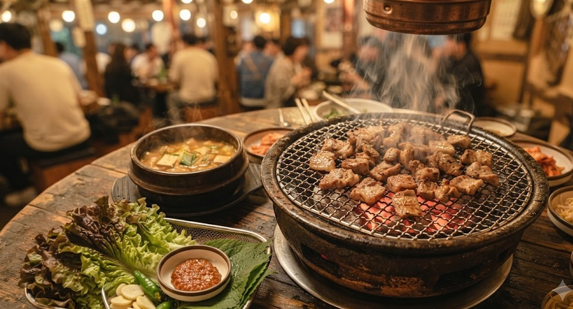

대동헌
📞 055-312-5266

뒷고기
줄 서서 먹는 장유 맛집
부드럽고 고소한 뒷고기, 구수한 된장찌개,
마지막은 볶음밥까지. 사장님 부부가 직접 챙깁니다.
#장유뒷고기
#셀프바
#된장찌개
#볶음밥
대동헌에
또 오는 이유
01
질 좋은 고기
씹을수록 고소한
부드러운 뒷고기
02
셀프바
채소·반찬을
마음껏 가져다 드세요
03
된장찌개
고기와 찰떡인
구수한 한 그릇
04
넉넉한 양
3인 기준 5인분,
배불리 드시고 가세요
김해시 장유면 신문리 504-3
매일 11:00 – 21:30
055-312-5266